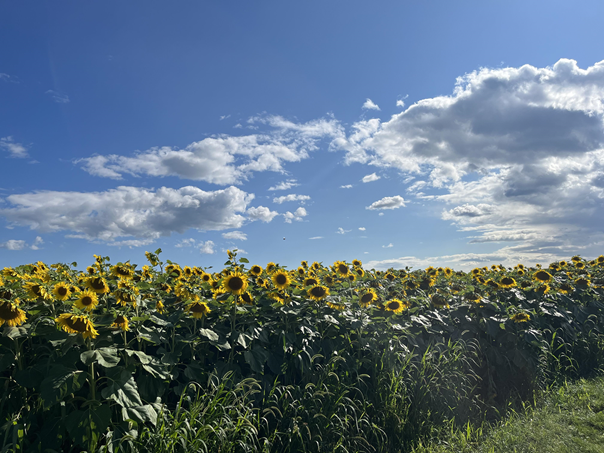

Welcome to Tuesday's Library!

Hello, and welcome to Tuesday's Library! Here you will find poetry and think-pieces by yours truly. I have been a fan of poetry since my early teen years, but I only started writing it in my final year of high school when I was encouraged by a really great English teacher who told me that I am "gifted," which is compliment that I will always remember.
My biggest inspirations are Emily Dickinson, Ocean Vuong, and Wendy Cope; To those familiar with their work, I think this is somewhat apparent in my poems.
Check it out below!